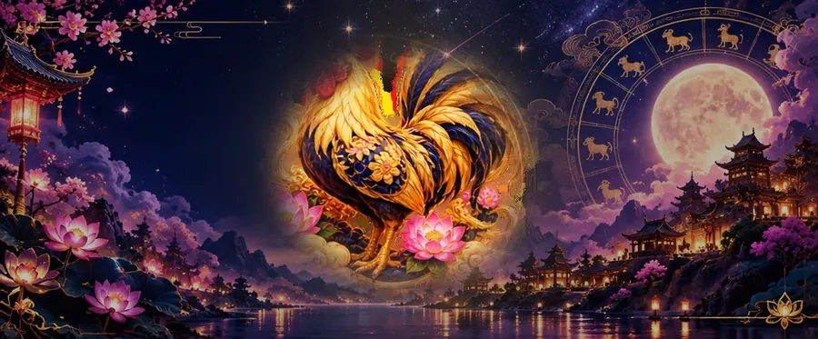

Chinese Zodiac Years
2005 Chinese Zodiac: Year of the Wood Rooster
Born in 2005? Your Chinese zodiac animal is most likely the Rooster, but check the date: the 2005 Wood Rooster year began on 9 February 2005. Here is everything about the year, from its element to its lucky colors and best matches.

2005: a Yin Wood Rooster year
The Chinese zodiac year 2005 was the Year of the Rooster. It began with Lunar New Year on 9 February 2005 and ended on 28 January 2006, the eve of the next Lunar New Year.
Each year also has an element and a Yin or Yang quality. 2005 ends in 5, which makes it a Wood year, and as an odd year it is Yin. In the traditional stem-and-branch count, 2005 is a Yi-you year. The same Wood Rooster combination comes round only once every 60 years: 1945 before it and 2065 after it.
Born in January or February 2005?
Lunar New Year 2005 fell on 9 February 2005, so everyone born in January 2005, and in February before that date, belongs to the previous year's animal, the Monkey.
The zodiac year starts at Lunar New Year, not on 1 January, which is why early-year birthdays need checking. Our guide Born in January? explains the rule, and the zodiac sign checker gives the exact answer for any birth date.
The Rooster's personality
Our Rooster guide describes the sign like this: “Observant, hard-working, and confident. Roosters are detail-oriented and take pride in doing things well.” The usual watch-out: “Can be overly critical or blunt with others.”
The Wood element adds its own flavour. Wood years bring growth, creativity, and a drive to build new things. People of this element tend to be cooperative, generous, and idealistic. Read more in our Wood element guide, or the full Year of the Rooster page.
Careers often linked with the Rooster: accounting, journalism, quality control, public speaking.
Lucky colors, numbers and days for the Rooster
- Lucky colors: gold, brown and yellow
- Lucky numbers: 5, 7 and 8
- Lucky days: Thursday and Saturday
These are the values used across this site. For a lucky color, number and time that change every day, see the daily fortune.
Best matches for someone born in 2005
In traditional compatibility, the Rooster's best matches are the Ox, Snake and Dragon, and its clash sign is the Rabbit, which sits directly opposite it on the zodiac circle. Our compatibility calculator compares two full birth dates, elements included.
The Rooster in 2026 and 2027
2026 (Fire Horse, until 5 February 2027): for the Rooster, it has no special traditional relationship with the Horse, so 2026 is a neutral year.
2027 (Fire Goat, from 6 February 2027): for the Rooster, it has no special traditional relationship with the Goat, so 2027 is a neutral year. See Chinese zodiac 2027 predictions for every sign.
Other Year of the Rooster years
Years of the same animal come every twelve years, each with a different element: 1981 (Metal Rooster); 1993 (Water Rooster); 2017 (Fire Rooster); 2029 (Earth Rooster). The full list is in our Chinese zodiac years chart.
Frequently asked questions
What Chinese zodiac is 2005?
2005 is the Year of the Rooster, a Yin Wood Rooster year (Yi-you).
When does the 2005 Year of the Rooster start and end?
It starts on 9 February 2005 and ends on 28 January 2006.
I was born in January 2005. What is my Chinese zodiac?
A Monkey: Lunar New Year 2005 was on 9 February 2005, so all of January 2005 belongs to the Monkey year.
What element is 2005?
Wood. 2005 ends in 5, which belongs to Wood, and it is a Yin year.
Who is the Rooster compatible with?
Traditionally the Ox, Snake and Dragon. The Rooster's clash sign is the Rabbit.
Sources and further reading
- Hong Kong Observatory: “Heavenly Stems and Earthly Branches” — the 60-part Gan-Zhi cycle used to name years, months, days and hours.
- Wikipedia: “Sexagenary cycle” — the ten stems and twelve branches, 1984 as the start of the present cycle, and the year changing at Lunar New Year.
- Farmers' Almanac: “When Is Lunar New Year 2027?” — Lunar New Year falls on the second new moon after the winter solstice, between 21 January and 21 February.
- New World Encyclopedia: “Wu xing” — the five elements and the generating and overcoming cycles.
- Britannica: Chinese zodiac — the zodiac as a classification of years in a repeating twelve-year cycle.
Traditional Chinese zodiac reading for culture and entertainment, not a scientific prediction. Year dates follow the Lunar New Year table used by our zodiac checker.
Explore more: Chinese zodiac years chart · Year of the Rooster · Born in January? · Zodiac sign checker
← All years: Chinese zodiac years chart